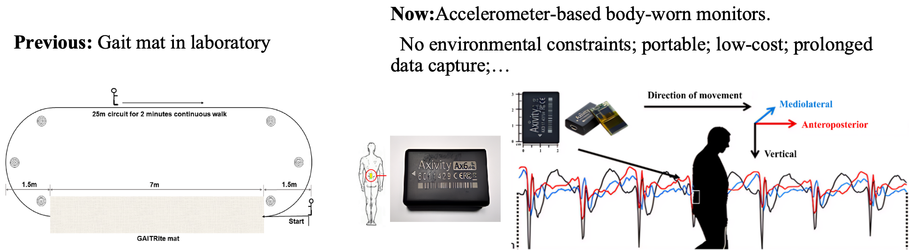
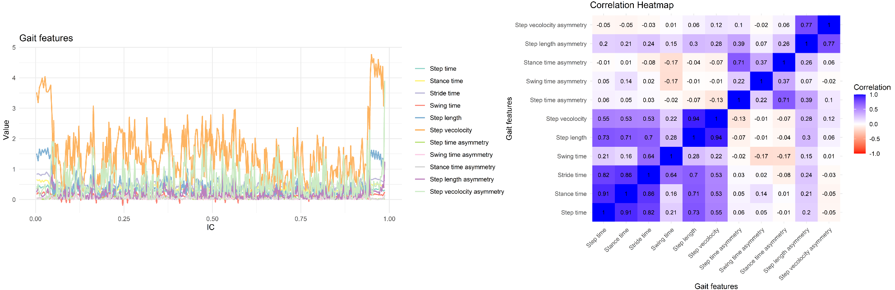
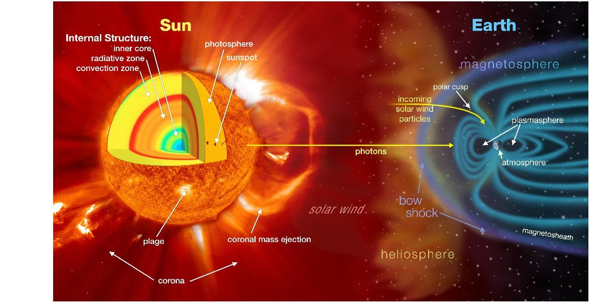
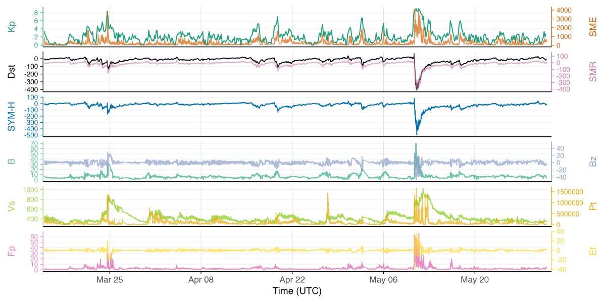

Research
This work studies multivariate temporal records: several signals observed together, often irregularly, with dependence across time and across variables. Wearable movement and solar–terrestrial measurements come from different instruments. They raise the same statistical questions. The scientific targets, including gait and solar activity, are properties of these joint records.
Data sources and structure
Wearable accelerometry
A laboratory gait mat records a short walk on a fixed path. Free-living studies use a waist-worn tri-axial accelerometer, which follows mediolateral, anteroposterior, and vertical acceleration while the person moves through ordinary surroundings. One participant can produce several gigabytes of signal, and subject, environment, and activity are mixed into the same record.

From a laboratory gait mat to a body-worn accelerometer. The three colored traces are the mediolateral, anteroposterior, and vertical components of the recorded acceleration.
From the raw acceleration I extract gait features — pace, rhythm, variability, asymmetry, and postural control — together with the center-of-mass path in each gait cycle. The result is a multivariate functional series. Features that describe the same step move together, so the association among them is part of the data structure.

Gait features along a cycle, and the correlation among them. Strong correlation is typical. Step time, stance time, and swing time, for example, describe the same cycle and move together.
Solar and near-Earth measurements
Space-weather series come from several instruments at once. Active-region summaries (SHARP and SMHARP), flares, coronal mass ejections, proton flux, and soft X-ray flux describe the Sun. Geomagnetic indices (Kp, Dst, SYM-H, SME, SMR) and near-Earth solar-wind measurements (magnetic field, Bz, speed, dynamic pressure, and electric field) describe the response at Earth. These series differ in sampling rate, units, and dynamic range, and storms appear as rare, simultaneous bursts.

Sun–Earth interactions that shape the measurements used for space-weather forecasting. Illustration from NASA Scientific Visualization Studio.

Joint pattern of geomagnetic indices and near-Earth solar-wind measurements over the same interval. The series share storm-time bursts and differ in scale and resolution.
Statistical questions
The two settings separate the scientific story from the statistical one. The questions are about the class of data, not about a particular instrument.
| Theme | Statistical question |
|---|---|
| Functional representation | How should an irregular trajectory be represented so that its shape is kept, while variation that is not of interest is not treated as part of the signal? |
| Dependence over time and across variables | When series move together and sometimes change character, how should that dependence be described so that shared structure and genuine change are distinguished? |
Research directions
The same questions run through both settings. Three of them mark where the methodology can go further.
| Direction | Statistical question |
|---|---|
| Structured learning | How can records from different instruments be brought into one analysis without discarding dependence across time and across variables? |
| Interpretation | How should the contribution of a predictor be understood when that predictor is a curve and is strongly tied to the others? |
| Uncertainty | How can an uncertainty statement stay meaningful for a rare event when observations are dependent and conditions change? |